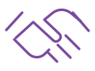

Únete
Forma parte de la Asociación.
Formulario digital para hacerse socio o unirse gratuitamente al canal divulgativo. Recoge datos, ideas, problemas, fotografías y firma de forma sencilla, segura y responsive.
Forma parte de la Asociación.

Impulsa iniciativas vecinales.
Comparte propuestas para mejorar.
Recibe comunicaciones y novedades.
Alta como socio. Incluye Estatutos, Política de Privacidad y aviso de contacto para formalizar la cuota anual de 20 €.
Rellenar formularioCanal divulgativo gratuito para recibir novedades y comunicaciones de la Asociación. No implica alta como socio ni cuota.
Quiero informaciónEnvía ideas, incidencias o propuestas con fotografías para mejorar el barrio de forma participativa.
Enviar propuestaComparte el enlace de la aplicación por WhatsApp u otros métodos compatibles con el dispositivo.